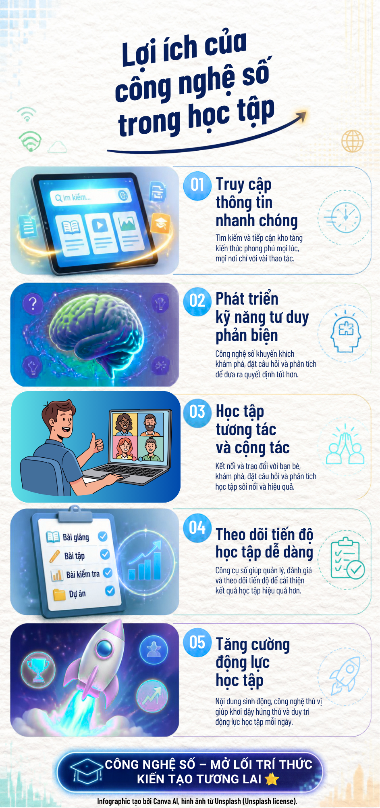

Lợi ích của công nghệ số trong học tập
Khám phá cách công nghệ số giúp người học tiếp cận kiến thức, phát triển kỹ năng và học tập hiệu quả hơn.
Infographic: Công nghệ số trong học tập

Khám phá cách công nghệ số giúp người học tiếp cận kiến thức, phát triển kỹ năng và học tập hiệu quả hơn.
